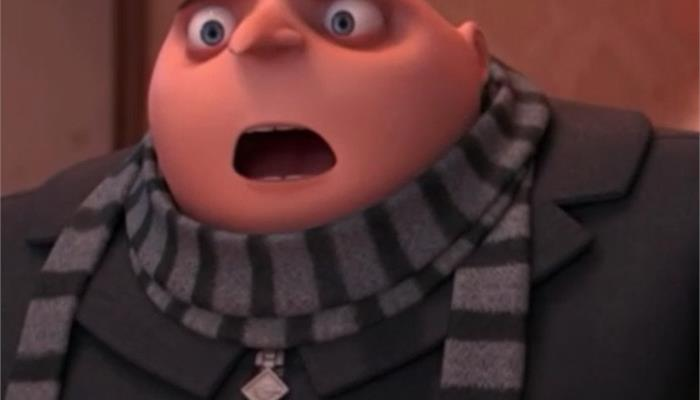

Lezioni - Teoria
Lo stile viene modificato su un foglio di stile in css a parte
L'attributo position permette di evitare che le transizioni spostino troppo le immagini, fisso la posizione di un elemento:
- static
default, segue il flusso della pagina, ignora top, left,…
- fixed
fisso, si sposta di top, left,... rispetto all'angolo in alto/sx del browser e non scorre con il resto del documento
- absolute
si sposta di top, left,... rispetto al primo contenitore con posizionamento diverso da static, se esiste, oppure rispetto alla pagina
- relative
si sposta di top, left,... rispetto al posto che avrebbe occupato in assenza di posizionamento
z-index
il browser memorizza le immagini una a fianco all'altra; posso modificare la loro visualizzazione modificando lo z-index
Float
posso usaro per cambiare la visualizzazione del testo, spostandolo a fianco, sopra o sotto l'immagine
Ho perso troppo tempo a muovere l'immagine mi son perso roba sulle cose responsive
mannaggia a Bio. Le impostanzioni responsive si applicano in caso aumenti o diminuisca la dimensione della pagina (wow)
Sticky Footer
Rimane attaccato al fondo della pagina anche quando si scorre
CSS dispone di alcune "variabili". Posso definire dei nomi che posso riutilizzare: proprietà personalizzate (custom proprerties)